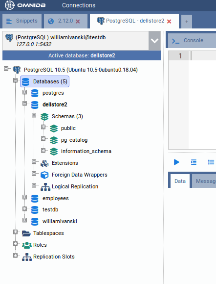
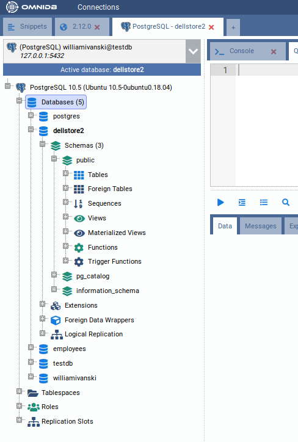
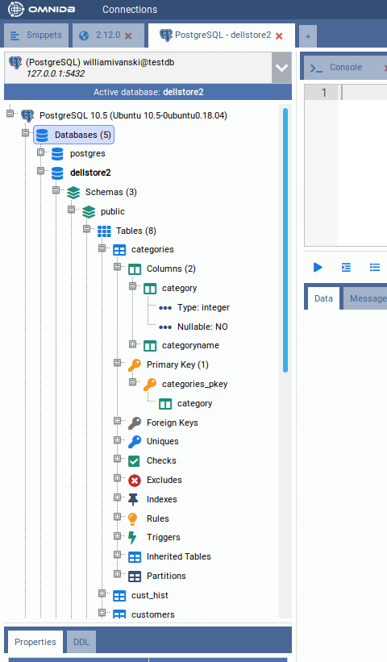
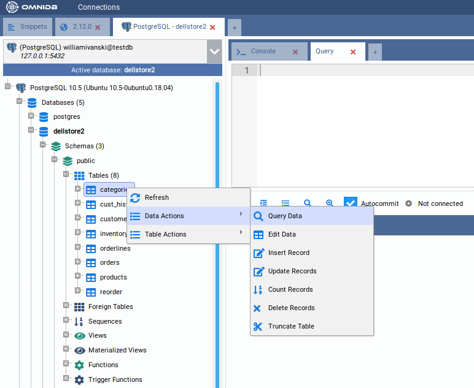
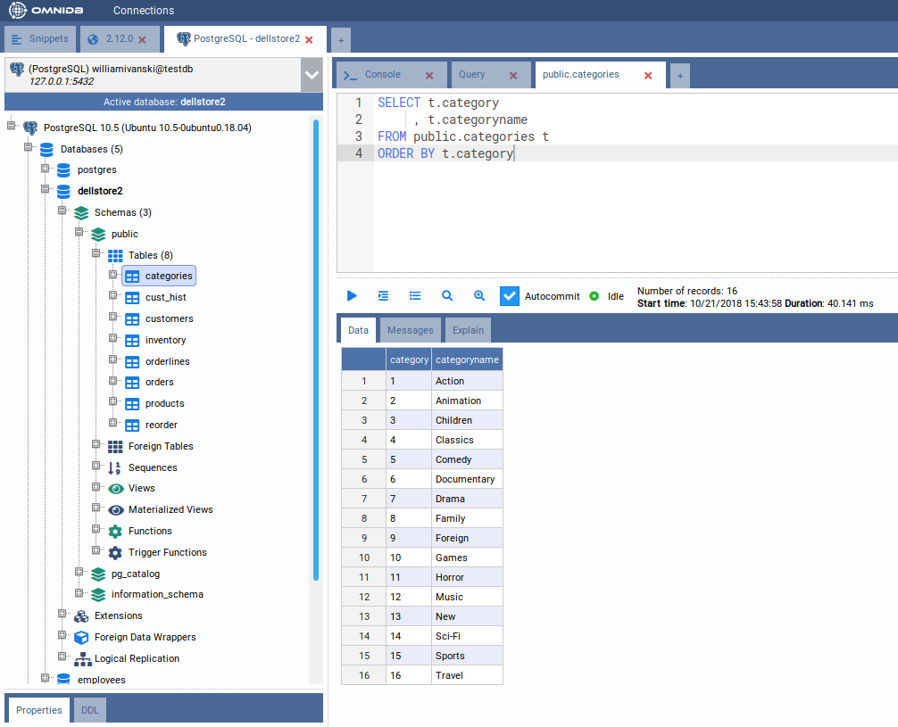

Gerir Bases de Dados
Depois de criar uma ligação, pode abri-la clicando em Connect (Ligar) na secção Ligações, ou fazendo duplo clique sobre ela na lista de ligações. O OmniDB passa então para a secção Base de dados e abre a ligação num novo separador de ligação.
Secções do espaço de trabalho
A barra de ícones na margem esquerda da janela alterna entre as secções do espaço de trabalho:
- Boas-vindas: a página inicial, com links para a documentação e para o tutorial Introdução (consulte Funcionalidades Adicionais);
- Ligações: onde as ligações são criadas, organizadas e abertas (consulte Criar Utilizadores e Ligações);
- Base de dados: os separadores de ligação abertos, cada um com a sua árvore da base de dados e os seus separadores de consulta e de consola — descritos neste capítulo;
- Monitorização, Notificações, Permissões e Utilizadores ligados: ferramentas que trabalham sobre as ligações abertas na secção Base de dados (consulte Painel de Monitorização, Notificações, Roles e Permissões e Utilizadores Ligados);
- Snippets: os seus excertos de SQL guardados (consulte Snippets);
- em baixo, Introdução (o tutorial interativo), Conta (apenas na versão servidor: o utilizador atual, a versão e Terminar sessão) e Definições (consulte Definições e Idiomas; os superutilizadores encontram também aí Gerir utilizadores).
As secções Base de dados, Monitorização, Notificações, Permissões e Utilizadores ligados mostram todas a mesma faixa de separadores de ligação abertos no topo, com a mesma seleção: selecione uma ligação numa delas e as restantes acompanham-na. Mudar de secção nunca fecha uma ligação.
Separadores de ligação
Cada ligação aberta é um separador nessa faixa, com o nome da ligação. Uma ligação marcada com um ambiente (Production, UAT, Development, Archive) mostra a cor desse ambiente no seu separador, para que uma ligação de produção seja fácil de distinguir. Passar o rato sobre um separador mostra os seus detalhes (servidor ou cadeia de ligação) e revela o seu botão de fecho (×). Os separadores podem ser reordenados arrastando-os.
O + no fim da faixa abre outra ligação: lista as suas ligações guardadas (agrupadas, se usar grupos) e, em Consolas SSH, as suas ligações de terminal. Fechar um separador de ligação termina as respetivas sessões de base de dados.
Dentro de um separador de ligação encontra:
- A árvore da base de dados à esquerda, onde navega pelos objetos da base de dados. Clicar com o botão direito num nó mostra o que pode fazer com ele.
- Os painéis Properties e DDL por baixo da árvore, que mostram as propriedades e a
instrução
CREATEdo nó selecionado na árvore. A árvore e este painel podem ser redimensionados arrastando os seus divisores e recolhidos com os pequenos botões de alternância que têm. - Separadores interiores à direita. O + no fim da faixa de separadores interiores acrescenta um Separador de consulta ou um Separador de consola; outras ações (como Editar dados numa tabela) abrem os seus próprios separadores interiores.
Um Separador de consulta contém um editor SQL com realce de sintaxe, preenchimento automático e localizar e substituir, uma barra de ferramentas (Executar, Executar instrução no cursor, Indentar SQL, Histórico de comandos, Explain, Explain Analyze, Autocommit, Exportar dados, …) e, por baixo, a área de resultados com os subseparadores Dados, Mensagens e Explain. Consulte Escrever Consultas SQL para mais detalhes.
Trabalhar com bases de dados
Expanda o nó raiz da árvore (com o nome do motor de base de dados). Da primeira vez que usar uma ligação cuja palavra-passe não está guardada, o OmniDB pede-a. Uma palavra-passe escrita nessa caixa é memorizada durante 30 minutos da sua sessão; depois disso, a caixa volta a aparecer. Depois de introduzir a palavra-passe correta, o nó raiz mostra a versão do servidor e expande-se, mostrando a ligação de base de dados atual e também elementos ao nível da instância — no caso do PostgreSQL: Bases de dados, Tablespaces, Roles e Slots de replicação.
Pode ligar-se a uma única base de dados PostgreSQL e, usando a mesma ligação, ligar-se a outras bases de dados na mesma instância PostgreSQL. Para mudar, expanda o nó de outra base de dados: o OmniDB pergunta se deseja realmente mudar a base de dados ativa e, com Sim, torna-a a base de dados ativa desse separador de ligação.
Vá em frente e expanda o nó Schemas (Esquemas). Verá todos os esquemas na base de dados
atual (no caso do PostgreSQL, os esquemas TOAST e temporários não são mostrados).

Agora clique para expandir o esquema public. Verá diferentes tipos de
elementos contidos neste esquema.

Agora clique para expandir o nó Tables (Tabelas), e verá todas as tabelas contidas
no esquema public. Expanda qualquer tabela e verá as suas colunas, chave primária,
chaves estrangeiras, restrições, índices, regras, triggers e partições.

Para ver registos dentro de uma tabela, clique com o botão direito nela e escolha Data Actions > Query Data.

Repare que o OmniDB abre um novo editor SQL com uma consulta simples para listar os registos da tabela. Os registos são apresentados numa grelha mesmo abaixo do editor. Esta grelha pode ser controlada com o teclado como se estivesse a usar um gestor de folhas de cálculo. Também pode copiar dados de células individuais ou de um bloco de células (que pode ser selecionado com o teclado ou o rato) e colar em qualquer gestor de folhas de cálculo.

Pode editar a consulta no editor SQL, escrevendo consultas simples ou mais complexas.
Para executar, clique no botão Executar ou prima Alt-Q
(Ctrl-Q no macOS). Se o resultado tiver mais linhas do que o primeiro lote obtido, aparecem os
botões Obter mais e Obter tudo. Mais detalhes nos próximos capítulos.
Trabalhar com vários separadores dentro da mesma ligação
Dentro de uma única ligação, pode criar vários separadores interiores clicando no + no fim da faixa de separadores interiores e escolhendo depois Separador de consulta (ou Separador de consola).
No OmniDB, pode executar várias instruções SQL e procedimentos em paralelo. Cada separador de consulta tem a sua própria sessão de base de dados. Enquanto um separador está em execução, mostra um indicador giratório; quando termina um separador que não está a ver, mostra em vez disso um visto. O botão vermelho Cancelar cancela a instrução em execução no separador atual.
Também pode arrastar e largar um separador para alterar a sua ordem. Isto funciona tanto com separadores interiores como com separadores de ligação. Quando uma fila de separadores fica sem espaço, os separadores encolhem passo a passo até mostrarem apenas o ícone; passar o rato sobre um separador só com ícone mostra o seu nome.
Adicionalmente, pode usar atalhos de teclado para gerir separadores interiores. Estes são os predefinidos no Windows/Linux (o macOS usa Ctrl em vez de Alt); todos podem ser alterados em Definições > Atalhos de teclado:
- Alt-I: Insere um novo separador interior
- Alt-Shift-Q: Remove o separador interior atual
- Alt-O: Muda o foco para o separador interior à esquerda
- Alt-P: Muda o foco para o separador interior à direita
Não existem atalhos de teclado para os separadores de ligação — use o rato ou arrastar e largar para esses. (O menu Visualizar da aplicação de ambiente de trabalho tem atalhos para mudar de secção; consulte Aplicação de Ambiente de Trabalho.)
Todos os separadores de consulta são guardados automaticamente sempre que os executa. Mesmo que feche a janela do OmniDB ou o separador do browser, ficam armazenados na base de dados de utilizador do OmniDB e são restaurados da próxima vez que abrir o OmniDB (na aplicação de ambiente de trabalho) ou voltar a iniciar sessão (na versão servidor) — o OmniDB arranca então na secção Base de dados com essas ligações abertas. Fechar você mesmo um separador de ligação ou um separador interior elimina-o permanentemente, pelo que não será restaurado.